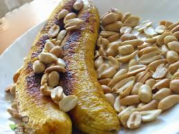

Roasted Plantain Recipe

Ingredients
- 2 ripe plantains
- Salt to taste
- Oil (optional for brushing)
Method of Preparation
- Preheat a grill or oven to medium-high heat.
- Peel the plantains and slice them in half lengthwise or leave them whole.
- Optionally, brush with oil and sprinkle with salt.
- Place the plantains on the grill or in the oven, cooking for about 10-15 minutes, turning occasionally until
golden brown and cooked through.
- Serve hot as a snack or side dish.